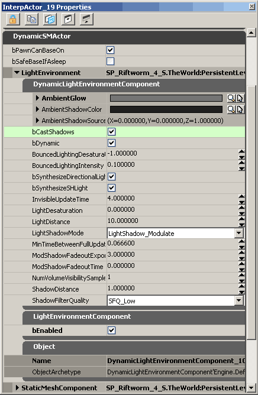

UDN
Search public documentation:
LightEnvironmentsCH
English Translation
日本語訳
한국어
Interested in the Unreal Engine?
Visit the Unreal Technology site.
Looking for jobs and company info?
Check out the Epic games site.
Questions about support via UDN?
Contact the UDN Staff
日本語訳
한국어
Interested in the Unreal Engine?
Visit the Unreal Technology site.
Looking for jobs and company info?
Check out the Epic games site.
Questions about support via UDN?
Contact the UDN Staff
光照环境
文档变更记录: 由 Daniel Wright 创建。
概述
需要光照环境的原因
光照环境的工作原理
设置
光源
这些针对于每个光源的相关设置：
bCastCompositeShadow（是否投射合成阴影）
对于影响阴影方向的光源，必须使它的 bCastCompositeShadow 项为真。默认情况下对于所有光源类型这项的值都为真；在 Epic 的版本变���列表 208754 之前，该项的值在点光源和聚光源上默认为假。对于设置此项为假的光源将用于影响光照环境的合成光照但是不影响光照环境的合成阴影。 bCastCompositeShadow(是否投射合成阴影)同时也控制着non-light-mapped(没有光照贴图)的光源是否受到调制阴影的影响；一个设置bCastCompositeShadow=False的动态光源将不会受到来自任何光源的调制阴影的影响。在有光照贴图的光源上将忽略bCastCompositeShadow(是否投射合成阴影)项，因为那个光源将被作为合成光源光照贴图的一部分进行渲染；所有的具有光照贴图的光源都将受到调制阴影的影响。CompositeDynamic (合成动态)通道
所有的光源默认都在 CompositeDynamic 通道内，然而如果您有任何不能使用合成光照环境的图元，您将仍然需要把光源放在动态光照通道内。注意 CompositeDynamic 是一个来自动态光照通道的单独的标志，它是作为一种优化出现的。一般会有很多光源是 CompositeDynamic 而不是 Dynamic 类型的，并且在 Dynamic(动态)光照中的光源无论何时当一个图元被重新附加到场景中时都需要进行检查以确保是否适当。图元的光照环境
这些是在 LightEnvironment(光照环境)中提供的设置，它们可以在 SkeletalMeshActors 上进行设置，比如：
DynamicLightEnvironmentComponent(动态光照环境组件)
- AmbientGlow - 除了关卡的光照之外所添加的环境颜色。
- AmbientShadowColor - 环境阴影的颜色。
- AmbientShadowSourceDirection - 环境阴影源的方向。
- bCastShadows - 光照环境是否投射阴影。
- bDynamic - 光照环境是否应该进行动态地更新。
- bFreeze - 光照环境的状态是否应该被冻结。（这个属性在最新的版本中不再可以进行编辑。）
- BouncedLightingIntensity - 仿真的反射光源的亮度，作为直接入射光源的一部分。
- BouncedLightingDesaturation - 应用到仿真的反射光源的饱和度减小值。一般来说这项为负值来使反射光照更加地饱和。
- bSynthesizeDirectionalLight - 定向光源是否要用于合成环境中的主光源。
- bSynthesizeSHLight - 球面调和光源是否用于合成没有被已合成的定向光源处理的其它的所有光源。如果不用于合成，则使用天空光源。
- InvisibleUpdateTime - 不可见 actor 的每次光照环境更新间的秒数。
- LightDesaturation - 关卡光照的饱和度减小的百分比，它可以用于帮助创作团队使带颜色的人物在带颜色的光照下变得更加的突出。
- LightDistance - 从拥有者的原点开始创建光源的距离，以半径的单位为单位。
- LightShadowMode - 应用到光源的阴影类型。
- MinTimeBetweenFullUpdates - 在每次完全更新间需要经过的最小时间量。
- ModShadowFadeoutExponent - 控制调制阴影衰减曲线的指数。
- ModShadowFadeoutTime - 自从投射阴影物体上一次可见的时间，在这个时间上调制阴影将会完全地淡出。
- NumVolumeVisibilitySamples - 在图元边界体积中可以使用的可见样本的数量。
- ShadowDistance - 在拥有者的坐标原点外投射阴影的距离，以半径的单位为单位。
- ShadowFilterQuality - 在光照环境中使用的过滤的阴影缓冲器的质量。
LightEnvironmentComponent(光照环境组件)
- bEnabled - 启用LightEnvironmentComponent(光照环境组件)。当启用 LightEnvironmentComponent(光照环境组件)时，DynamicLightEnvironment将在Dynamic(动态)光照通道内的图元作为在 CompositeDynamic 光照通道内的图元进行对待。在这个方面上动态通道是唯一的，没有其它的通道可以通过 DynamicLightEnvironmentComponent 进行重新解释。